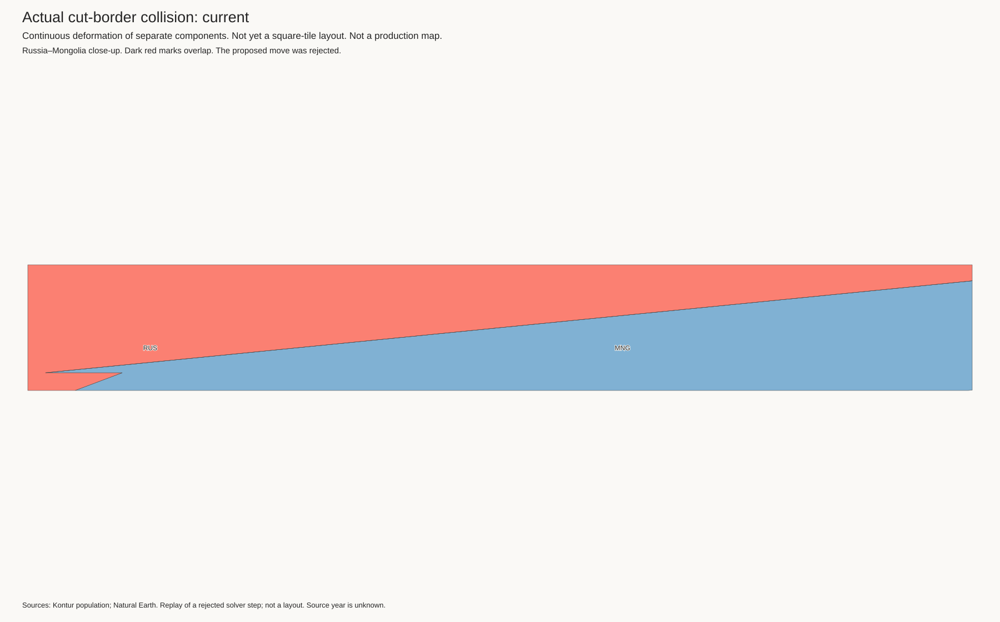
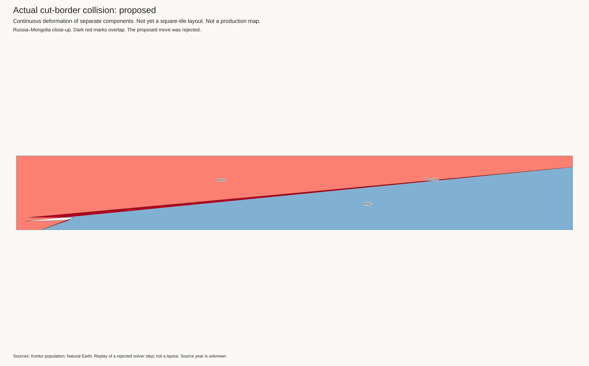

This is a rejected movement, not a new layout. Russia–Mongolia accounts for more than 99% of this proposal's overlap.
A small overlap passed the geometric tolerance. At the next step, some points inside the neighbouring country were treated as having positive clearance. The separating direction pointed inward. The correction uses a negative clearance for these points and an outward direction.


The images use the same crop. The corrected constraints reject this captured move. This does not by itself prove that a new fit succeeds.
Replay checks · Two-country regression fixture · Original full-mesh trace · Checksums